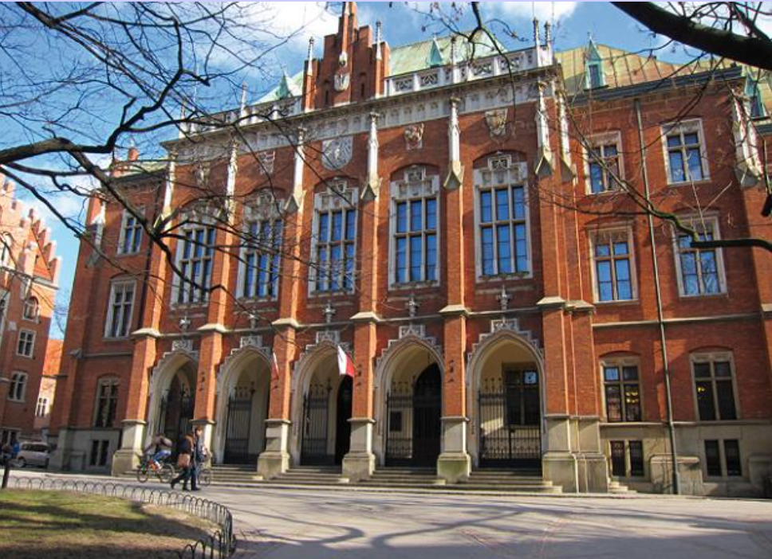
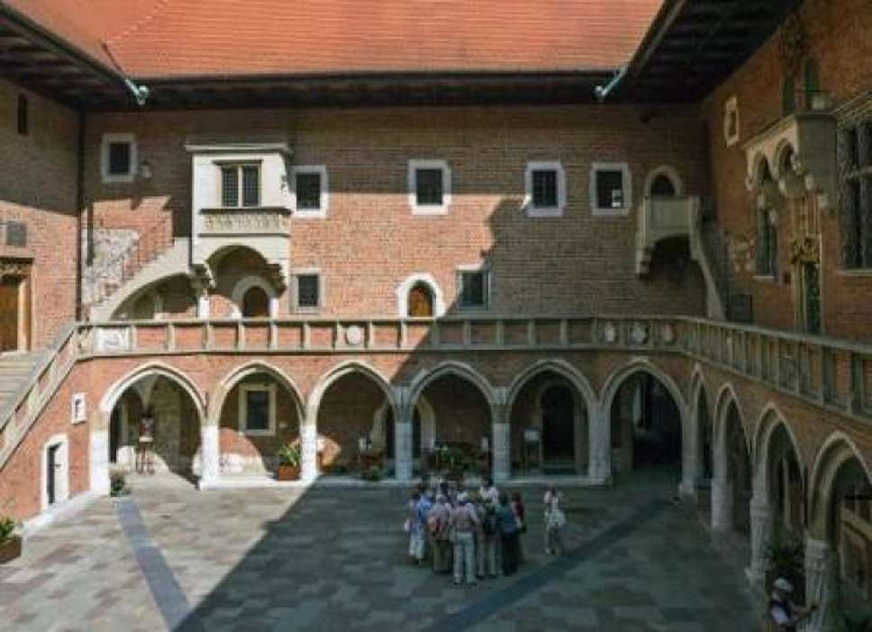
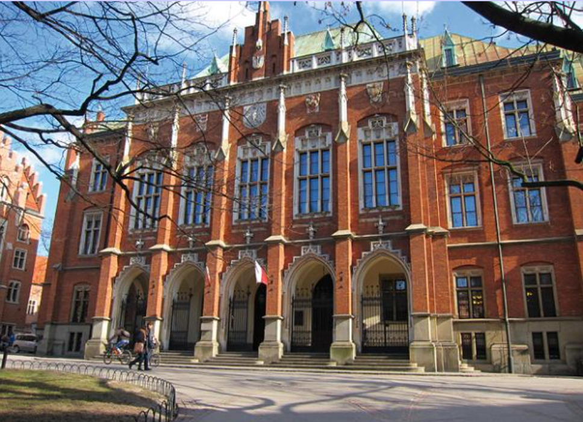
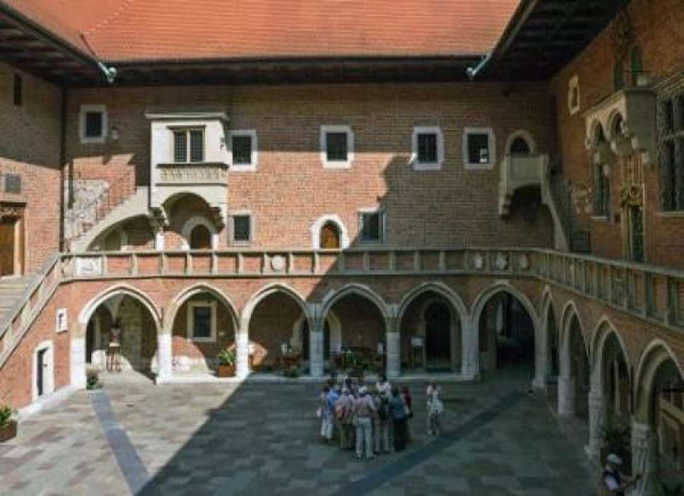

O Uniwersytecie Jagiellońskim
Uniwersytet Jagielloński w Krakowie (UJ) to najstarsza uczelnia wyższa w Polsce
i jedna z najstarszych w Europie. Został założony w 1364 roku przez króla Kazimierza
Wielkiego. Jest to uczelnia o międzynarodowym prestiżu, która odgrywa kluczową rolę w
polskiej i europejskiej nauce i edukacji. Uniwersytet Jagielloński jest jednym z czołowych
ośrodków naukowych w Polsce, który posiada szeroką ofertę edukacyjną, obejmującą wszystkie
najważniejsze dziedziny nauki – od humanistyki po nauki przyrodnicze, medycynę, prawo, ekonomię
i nauki społeczne. UJ w Krakowie to także ośrodek życia akademickiego, kulturalnego i intelektualnego,
którego studenci mają dostęp do licznych inicjatyw naukowych, artystycznych oraz wydarzeń kulturalnych.
Uniwersytet współpracuje z innymi uczelniami i ośrodkami badawczymi na całym świecie. Jako
uczelnia o długiej tradycji, Uniwersytet Jagielloński nie tylko kształci młode pokolenia, ale także wpływa
na rozwój kultury i nauki na poziomie krajowym i międzynarodowym.
 


